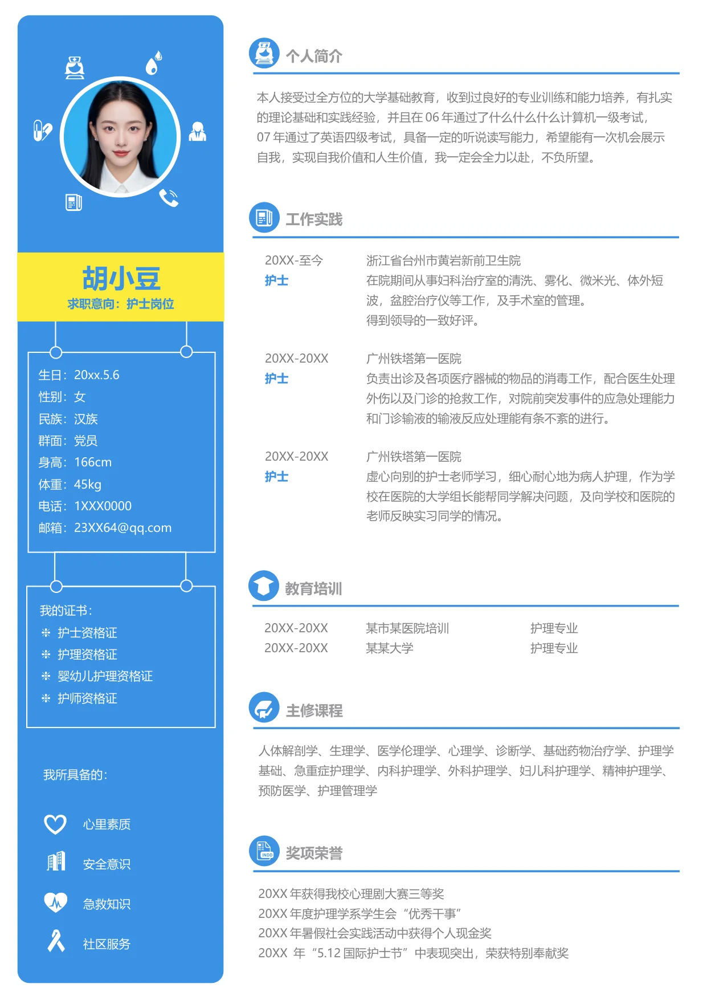

·
胡小豆
求职意向：护士岗位
生日：20xx.5.6
性别：女
民族：汉族
群面：党员
身高：166cm
体重：45kg
电话：1XXX0000
邮箱：23XX64@qq.com
我的证书：
护士资格证
❈
护理资格证
❈
婴幼儿护理资格证
❈
护师资格证
❈
我所具备的：
心里素质
安全意识
急救知识
社区服务
个人简介
工作实践
教育培训
主修课程
奖项荣誉
20XX 年获得我校心理剧大赛三等奖
20XX 年度护理学系学生会“优秀干事”
20XX 年暑假社会实践活动中获得个人现金奖
20XX 年“5.12 国际护士节”中表现突出，荣获特别奉献奖
人体解剖学、生理学、医学伦理学、心理学、诊断学、基础药物治疗学、护理学
基础、急重症护理学、内科护理学、外科护理学、妇儿科护理学、精神护理学、
预防医学、护理管理学
20XX-至今
浙江省台州市黄岩新前卫生院
护士
在院期间从事妇科治疗室的清洗、雾化、微米光、体外短
波，盆腔治疗仪等工作，及手术室的管理。
得到领导的一致好评。
20XX-20XX
广州铁塔第一医院
护士
负责出诊及各项医疗器械的物品的消毒工作，配合医生处理
外伤以及门诊的抢救工作，对院前突发事件的应急处理能力
和门诊输液的输液反应处理能有条不紊的进行。
20XX-20XX
广州铁塔第一医院
护士
虚心向别的护士老师学习，细心耐心地为病人护理，作为学
校在医院的大学组长能帮同学解决问题，及向学校和医院的
老师反映实习同学的情况。
20XX-20XX
某市某医院培训
护理专业
20XX-20XX
某某大学
护理专业
本人接受过全方位的大学基础教育，收到过良好的专业训练和能力培养，有扎实
的理论基础和实践经验，并且在06 年通过了什么什么什么计算机一级考试，
07 年通过了英语四级考试，具备一定的听说读写能力，希望能有一次机会展示
自我，实现自我价值和人生价值，我一定会全力以赴，不负所望。